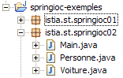
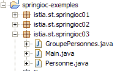

15. Spring IoC
15.1. Introduction
Nous nous proposons de découvrir les possibilités de configuration et d'intégration du framework Spring (http://www.springframework.org) ainsi que de définir et utiliser la notion d'IoC (Inversion of Control), également appelée injection de dépendance (Dependency Injection)
Considérons l'application 3-tier que nous venons de construire :
 |
Pour répondre aux demandes de l'utilisateur, le contôleur [Application] doit s'adresser à la couche [service]. Dans notre exemple, celle-ci était une instance de type [DaoImpl]. le contôleur [Application] a obtenu une référence sur la couche [service] dans sa méthode [init] (paragraphe 14.8.3) :
- ligne 6 : la couche [dao] a été instanciée par la création explicite d'une instance [DaoImpl]
- ligne 9 : la couche [service] a été instanciée par la création explicite d'une instance [ServiceImpl]
Rappelons que les classes [DaoImpl] et [ServiceImpl] implémentent des interfaces, respectivement les interfaces [IDao] et [IService]. Dans des versions à venir, l'interface [IDao] sera implémentée par une classe gérant une liste des personnes placée en base de données. Appelons cette classe [DaoBD] pour l'exemple. Remplacer l'implémentation [DaoImpl] de la couche [dao) par l'implémentation [DaoBD] va nécessiter une recompilation de la couche [web]. En effet, la ligne 6 ci-dessus qui instancie la couche [dao] avec un type [DaoImpl] doit désormais l'instancier avec un type [DaoBD]. Notre couche [web] est donc dépendante de la couche [dao]. La ligne 9 ci-dessus montre qu'elle est également dépendante de la couche [service].
Spring IoC va nous permettre de créer une application 3tier où les couches sont indépendantes des autres, c.a.d. que changer l'une ne nécessite pas de changer les autres. Cela apporte une grande souplesse dans l'évolution de l'application.
L'architecture précédente va évoluer de la façon suivante :
 |
Avec [Spring IoC], le contrôleur [Application] va obtenir la référence dont il a besoin sur la couche [service] de la façon suivante :
- dans sa méthode [init], il va demander à la couche [Spring IoC] de lui donner une référence sur la couche [service]
- [Spring IoC] va alors exploiter un fichier XML de configuration qui lui indique quelle classe doit être instanciée et comment elle doit être initialisée.
- [Spring IoC] rend au contrôleur [Application] la référence de la couche [service] créée.
L'avantage de cette solution est que désormais le nom des classes instanciant les différentes couches n'est plus codé en dur dans la méthode [init] du contrôleur mais simplement présent dans un fichier de configuration. Changer l'implémentation d'une couche induira un changement dans ce fichier de configuration mais pas dans le contrôleur.
Présentons maintenant les possibilités de [Spring IoC] à l'aide d'exemples.
15.2. Spring IoC par la pratique
15.2.1. Spring
[Spring IoC] est une partie d'un projet plus large disponible à l'url [http://www.springframework.org/] (mai 2006) :
 |  |
 |
- [1] : Spring utilise diverses technologies tierces appelées ici dépendances. Il faut télécharger la version avce dépendances afin d'éviter d'être obligés ensuite de télécharger les bibliothèques des outils tiers.
- [2] : l'arborescence du fichier zippé téléchargé
- [3] : la distribution [Spring], c.a.d. les archives .jar du projet Spring lui-même sans ses dépendances. L'aspect [IoC] de Spring est assuré par les archives [spring-core.jar, spring-beans.jar].
- [4,5] : les archives des outils tiers
15.2.2. Projets Eclipse des exemples
Nous allons construire trois exemples illustrant l'utilisation de Spring IoC. Ils seront tous dans le projet Eclipse suivant :

Le projet [springioc-exemples] est configuré pour que les fichiers source et les classes compilées soient à la racine du dossier du projet :
 |
- [1] : l'arborescence du dossier du projet [Eclipse]
- [2] : les fichiers de configuration de Spring sont à la racine du projet, donc dans le Classpath de l'application
- [3] : les classes de l'exemple 1
- [4] : les classes de l'exemple 2
- [5] : les classes de l'exemple 3
- [6] : les bibliothèques du projet [spring-core.jar, spring-beans.jar] seront trouvés dans le dossier [dist] de la distribution de Spring et [commons-logging.jar] dans le dossier [lib/jakarta-commons]. Ces trois archives ont été incluses dans le Classpath de l'application.
15.2.3. Exemple 1
Les éléments de l'exemple 1 ont été placés dans le paquetage [springioc01] du projet :

La classe [Personne] est la suivante :
La classe présente :
- lignes 6-7 : deux champs privés nom et age
- lignes 23-38 : les méthodes de lecture (get) et d'écriture (set) de ces deux champs
- lignes 10-12 : une méthode toString pour récupérer la valeur de l'objet [Personne] sous la forme d'une chaîne de caractères
- lignes 15-21 : une méthode init qui sera appelée par Spring à la création de l'objet, une méthode close qui sera appelée à la destruction de l'objet
Pour instancier des objets de type [Personne] à l'aide de Spring, nous utiliserons le fichier [spring-config-01.xml] suivant :
<?xml version="1.0" encoding="UTF-8"?>
<!DOCTYPE beans PUBLIC "-//SPRING//DTD BEAN//EN" "http://www.springframework.org/dtd/spring-beans.dtd">
<beans>
<bean id="personne1" class="istia.st.springioc01.Personne" init-method="init" destroy-method="close">
<property name="nom" value="Simon" />
<property name="age" value="40" />
</bean>
<bean id="personne2" class="istia.st.springioc01.Personne" init-method="init" destroy-method="close">
<property name="nom" value="Brigitte" />
<property name="age" value="20" />
</bean>
</beans>
- lignes 3, 12 : la balise <beans> est la balise racine des fichiers de configuration Spring. A l'intérieur de cette balise, la balise <bean> sert à définir les différents objets à créer.
- lignes 4-7 : définition d'un bean
- ligne 4 : le bean s'appelle [personne1] (attribut id) et est une instance de la classe [istia.st.springioc01.Personne] (attribut class). La méthode [init] de l'instance sera appelée une fois celle-ci créée (attribut init-method) et la méthode [close] de l'instance sera appelée avant sa destruction (attribut destroy-method).
- ligne 5 : définissent la valeur à donner à la propriété [nom] (attribut name) de l'instance [Personne] créée. Pour faire cette initialisation, Spring utilisera la méthode [setNom]. Il faut donc que cette méthode existe. C'est le cas ici.
- ligne 6 : idem pour la propriété [age].
- lignes 8-11 : définition analogue d'un bean nommé [personne2]
La classe de test [Main] est la suivante :
Commentaires :
- ligne 10 : pour obtenir les beans définis dans le fichier [spring-config-01.xml], nous utilisons un objet de type [XmlBeanFactory] qui permet d'instancier les beans définis dans un fichier XML. Le fichier [spring-config-01.xml] sera placé dans le [ClassPath] de l'application, c.a.d. dans l'un des répertoires explorés par la machine virtuelle Java lorsqu'elle cherche une classe référencée par l'application. L'objet [ClassPathResource] sert à rechercher une ressource dans le [ClassPath] d'une application, ici le fichier [spring-config-01.xml]. L'objet [bf] obtenu (Bean Factory) permet d'obtenir la référence d'un bean nommé "XX" par l'instruction bf.getBean("XX").
- ligne 12 : on demande une référence sur le bean nommé [personne1] dans le fichier [spring-config-01.xml].
- ligne 13 : on affiche la valeur de l'objet [Personne] correspondant.
- lignes 15-16 : on fait de même pour le bean nommé [personne2].
- lignes 18-19 : on redemande le bean nommé [personne2].
- ligne 21 : on supprime tous les beans de [bf] c.a.d. ceux créés à partir du fichier [spring-config-01.xml].
L'exécution de la classe [Main] donne les résultats suivants :
Commentaires :
- la ligne 1 a été obtenue par l'exécution de la ligne 12 de [Main]. L'opération
a forcé la création du bean [personne1]. Parce que dans la définition du bean [personne1] on avait écrit [init-method="init"], la méthode [init] de l'objet [Personne] créé a été exécutée. Le message correspondant est affiché.
- ligne 2 : la ligne 13 de [Main] a fait afficher la valeur de l'objet [Personne] créé.
- lignes 3-4 : le même phénomène se répète pour le bean nommé [personne2].
- ligne 5 : l'opération des lignes 18-19 de [Main]
personne2 = (Personne) bf.getBean("personne2");
System.out.println("personne2=" + personne2.toString());
n'a pas provoqué la création d'un nouvel objet de type [Personne]. Si cela avait été le cas, on aurait eu l'affichage de la méthode [init]. C'est le principe du singleton. Spring, par défaut, ne crée qu'un seul exemplaire des beans de son fichier de configuration. C'est un service de références d'objet. Si on lui demande la référence d'un objet non encore créé, il le crée et en rend une référence. Si l'objet a déjà été créé, Spring se contente d'en donner une référence. Ici [personne2] ayant déjà été créé, Spring se contente d'en rendre une référence.
- les affichages des lignes 6-7 ont été provoqués par la ligne 21 de [Main] qui demande la destruction de tous les beans référencés par l'objet [XmlBeanFactory bf], donc les beans [personne1, personne2]. Parce que ces deux beans ont l'attribut [destroy-method="close"], la méthode [close] des deux beans est exécutée et provoque l'affichage des lignes 6-7.
Les bases d'une configuration Spring étant maintenant acquises, nous serons désormais un peu plus rapides dans nos explications.
15.2.4. Exemple 2
Les éléments de l'exemple 2 sont placés dans le paquetage [springioc02] du projet :

Le paquetage [springioc02] est d'abord obtenu par copier / coller du paquetage [springioc01] puis ensuite on y ajoute la classe [Voiture] et on adapte la classe [Main] au nouvel exemple.
La classe [Voiture] est la suivante :
La classe présente :
- lignes 5-7 : trois champs privés type, marque et propriétaire. Ces champs peuvent être initialisés et lus par des méthodes publiques de beans get et set des lignes 26-48. Ils peuvent être également initialisés à l'aide du constructeur Voiture(String, String, Personne) défini lignes 13-17. La classe possède également un constructeur sans arguments afin de suivre la norme JavaBean.
- lignes 20-23 : une méthode toString pour récupérer la valeur de l'objet [Voiture] sous la forme d'une chaîne de caractères
- lignes 51-57 : une méthode init qui sera appelée par Spring juste après la création de l'objet, une méthode close qui sera appelée à la destruction de l'objet
Pour créer des objets de type [Voiture], nous utiliserons le fichier Spring [spring-config-02.xml] suivant :
<?xml version="1.0" encoding="UTF-8"?>
<!DOCTYPE beans PUBLIC "-//SPRING//DTD BEAN//EN" "http://www.springframework.org/dtd/spring-beans.dtd">
<beans>
<bean id="personne1" class="istia.st.springioc02.Personne" init-method="init" destroy-method="close">
<property name="nom" value="Simon" />
<property name="age" value="40" />
</bean>
<bean id="personne2" class="istia.st.springioc02.Personne" init-method="init" destroy-method="close">
<property name="nom" value="Brigitte" />
<property name="age" value="20" />
</bean>
<bean id="voiture1" class="istia.st.springioc02.Voiture" init-method="init" destroy-method="close">
<constructor-arg index="0" value="Peugeot" />
<constructor-arg index="1" value="307" />
<constructor-arg index="2">
<ref local="personne2" />
</constructor-arg>
</bean>
</beans>
Ce fichier ajoute aux beans définis dans [spring-config-01.xml] un bean de clé "voiture1" de type [Voiture] (lignes 12-17). Pour initialiser ce bean, on aurait pu écrire :
Plutôt que de choisir cette méthode déjà présentée dans l'exemple 1, nous avons choisi d'utiliser ici le constructeur Voiture(String, String, Personne) de la classe.
- ligne 12 : définition du nom du bean, de sa classe, de la méthode à exécuter après son instanciation, de la méthode à exécuter après sa suppression.
- ligne 13 : valeur du 1er paramètre du constructeur [Voiture(String, String, Personne)].
- ligne 14 : valeur du 2ième paramètre du constructeur [Voiture(String, String, Personne)].
- lignes 15-17 : valeur du 3ième paramètre du constructeur [Voiture(String, String, Personne)]. Ce paramètre est de type [Personne]. On lui fournit comme valeur, la référence (balise ref) du bean [personne2] défini dans le même fichier (attribut local).
Pour nos tests, nous utiliserons la classe [Main] suivante :
La méthode [main] demande la référence du bean [voiture1] (ligne 12) et l'affiche (ligne 13). Les résultats sont les suivants :
Commentaires :
- la méthode [main] demande une référence sur le bean [voiture1] (ligne 12). Spring commence la création du bean [voiture1] car ce bean n'a pas encore été créé (singleton). Parce que le bean [voiture1] référence le bean [personne2], ce dernier bean est construit à son tour. Le bean [personne2] a été créé. Sa méthode [init] est alors exécutée (ligne 1) des résultats. Le bean [voiture1] est ensuite instancié. Sa méthode [init] est alors exécutée (ligne 2) des résultats.
- la ligne 3 des résultats provient de la ligne 13 de [main] : la valeur du bean [voiture1] est affichée.
- la ligne 15 de [main] demande la destruction de tous les beans existants, ce qui provoque les affichages des lignes 4 et 5 des résultats.
15.2.5. Exemple 3
Les éléments de l'exemple 3 sont placés dans le paquetage [springioc03] du projet :

Le paquetage [springioc03] est d'abord obtenu par copier / coller du paquetage [springioc01] puis ensuite on y ajoute la classe [GroupePersonnes], on supprime la classe [Voiture] et on adapte la classe [Main] au nouvel exemple.
La classe [GroupePersonnes] est la suivante :
Ses deux membres privés sont :
ligne 8 : membres : un tableau de personnes membres du groupe
ligne 9 : groupesDeTravail : un dictionnaire affectant une personne à un groupe de travail
On remarquera ici que la classe [GroupePersonnes] ne définit pas de constructeur sans argument. On rappelle qu'en l'absence de tout constructeur, il existe un constructeur "par défaut" qui est le constructeur sans arguments et qui ne fait rien.
On cherche ici, à montrer comment Spring permet d'initialiser des objets complexes tels que des objets possédant des champs de type tableau ou dictionnaire. Le fichier des beans [spring-config-03.xml] de l'exemple 3 est le suivant :
<?xml version="1.0" encoding="UTF-8"?>
<!DOCTYPE beans PUBLIC "-//SPRING//DTD BEAN//EN" "http://www.springframework.org/dtd/spring-beans.dtd">
<beans>
<bean id="personne1" class="istia.st.springioc03.Personne" init-method="init" destroy-method="close">
<property name="nom" value="Simon" />
<property name="age" value="40" />
</bean>
<bean id="personne2" class="istia.st.springioc03.Personne" init-method="init" destroy-method="close">
<property name="nom" value="Brigitte" />
<property name="age" value="20" />
</bean>
<bean id="groupe1" class="istia.st.springioc03.GroupePersonnes" init-method="init" destroy-method="close">
<property name="membres">
<list>
<ref local="personne1" />
<ref local="personne2" />
</list>
</property>
<property name="groupesDeTravail">
<map>
<entry key="Brigitte" value="Marketing" />
<entry key="Simon" value="Ressources humaines" />
</map>
</property>
</bean>
</beans>
- lignes 14-17 : la balise <list> permet d'initialiser un champ de type tableau ou implémentant l'interface List avec différentes valeurs.
- lignes 20-23 : la balise <map> permet de faire la même chose avec un champ implémentant l'interface Map.
Pour nos tests, nous utiliserons la classe [Main] suivante :
- lignes 12-13 : on demande à spring une référence sur le bean [groupe1] et on affiche la valeur de celui-ci.
Les résultats obtenus sont les suivants :
Commentaires :
- ligne 12 de [Main], on demande une référence du bean [groupe1]. Spring commence la création de ce bean. Parce que le bean [groupe1] référence les beans [personne1] et [personne2], ces deux beans sont créés (lignes 1 et 2) des résultats. Le bean [groupe1] est ensuite instancié et sa méthode [init] exécutée (ligne 3 des résultats).
- la ligne 13 de [Main] fait afficher la ligne 4 des résultats.
- la ligne 15 de [Main] fait afficher les lignes 5-7 des résultats.
15.3. Configuration d'une application n tier avec Spring
Considérons une application 3-tier ayant la structure suivante :
utilisateurDonnéesCouche métier [metier]Couche d'accès aux données [dao]Couche interface utilisateur [ui]
Nous nous proposons de montrer ici l'intérêt de Spring pour construire une telle architecture.
- les trois couches seront rendues indépendantes grâce à l'utilisation d'interfaces Java
- l'intégration des trois couches sera réalisée par Spring
La structure de l'application sous Eclipse pourrait être la suivante :
 |
- [1] : la couche [dao] :
- [IDao] : l'interface de la couche
- [Dao1, Dao2] : deux implémentations de cette interface
- [2] : la couche [metier] :
- [IMetier] : l'interface de la couche
- [Metier1, Metier2] : deux implémentations de cette interface
- [3] : la couche [ui] :
- [IUi] : l'interface de la couche
- [Ui1, Ui2] : deux implémentations de cette interface
- [4] : les fichiers de configuration Spring de l'application. Nous configurerons l'application de deux façons.
- [5] : les bibliothèques nécessaires à l'application. Ce sont celles utilisées dans les exemples précédents.
- [6] : le paquetage des tests. [Main1] utilisera la configuration [spring-config-01.xml] et [Main2] la configuration [spring-config-02.xml].
Le but de cet exemple est de montrer que nous pouvons changer l'implémentation d'une ou plusieurs couches de l'application avec un impact zéro sur les autres couches. Tout se passe dans le fichier de configuration de Spring.
La couche [dao]
La couche [dao] implémente l'interface [IDao] suivante :
L'implémentation [Dao1] sera la suivante :
L'implémentation [Dao2] sera la suivante :
La couche [métier]
La couche [métier] implémente l'interface [IMetier] suivante :
L'implémentation [Metier1] sera la suivante :
L'implémentation [Metier2] sera la suivante :
La couche [ui]
La couche [ui] implémente l'interface [IUi] suivante :
L'implémentation [Ui1] sera la suivante :
L'implémentation [Ui2] sera la suivante :
Les fichiers de configuration Spring
Le premier [spring-config-01.xml] :
<?xml version="1.0" encoding="UTF-8"?>
<!DOCTYPE beans PUBLIC "-//SPRING//DTD BEAN//EN" "http://www.springframework.org/dtd/spring-beans.dtd">
<beans>
<!-- la classe dao -->
<bean id="dao" class="istia.st.springioc.troistier.dao.Dao1"/>
<!-- la classe métier -->
<bean id="metier" class="istia.st.springioc.troistier.metier.Metier1">
<property name="dao">
<ref local="dao" />
</property>
</bean>
<!-- la classe UI -->
<bean id="ui" class="istia.st.springioc.troistier.ui.Ui1">
<property name="metier">
<ref local="metier" />
</property>
</bean>
</beans>
Le second [spring-config-02.xml] :
<?xml version="1.0" encoding="UTF-8"?>
<!DOCTYPE beans PUBLIC "-//SPRING//DTD BEAN//EN" "http://www.springframework.org/dtd/spring-beans.dtd">
<beans>
<!-- la classe dao -->
<bean id="dao" class="istia.st.springioc.troistier.dao.Dao2"/>
<!-- la classe métier -->
<bean id="metier"
class="istia.st.springioc.troistier.metier.Metier2">
<property name="dao">
<ref local="dao" />
</property>
</bean>
<!-- la classe UI -->
<bean id="ui" class="istia.st.springioc.troistier.ui.Ui2">
<property name="metier">
<ref local="metier" />
</property>
</bean>
</beans>
Les programmes de test
Le programme [Main1] est le suivant :
Le programme [Main1] utilise le fichier de configuration [spring-config-01.xml] et donc les implémentations [Ui1, Metier1, Dao1] des couches. Les résultats obtenus sur la console Eclipse :
Le programme [Main2] est le suivant :
Le programme [Main2] utilise le fichier de configuration [spring-config-02.xml] et donc les implémentations [Ui2, Metier2, Dao2] des couches. Les résultats obtenus sur la console Eclipse :
15.4. Conclusion
L'application que nous avons construite possède une grande souplesse d'évolution. On y change l'implémentation d'une couche par simple configuration. Le code des autres couches reste inchangé. Ceci est obtenu grâce au concept IoC qui est l'un des deux piliers de Spring. L'autre pilier est AOP (Aspect Oriented Programming) que nous n'avons pas présenté. Il permet d'ajouter, également par configuration, du "comportement" à une méthode de classe sans modifier le code de celle-ci.